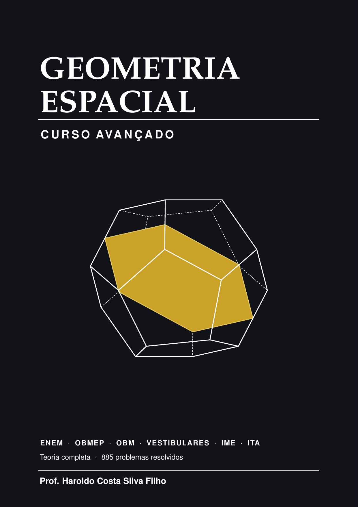

Geometria Espacial
Curso Avançado
Da reta e do plano no espaço aos sólidos de revolução, com todos os teoremas demonstrados. Seis capítulos e dois apêndices — volumes por integração e geometria analítica no espaço. Trata de temas raramente reunidos num só volume: homotetia, tetraedro órtico, tetraedro característico, seções planas dos poliedros regulares e as esferas inscrita, circunscrita e tangente às arestas.
428 páginas885 problemas resolvidosmais de 300 figurasISBN 978-65-02-43375-1